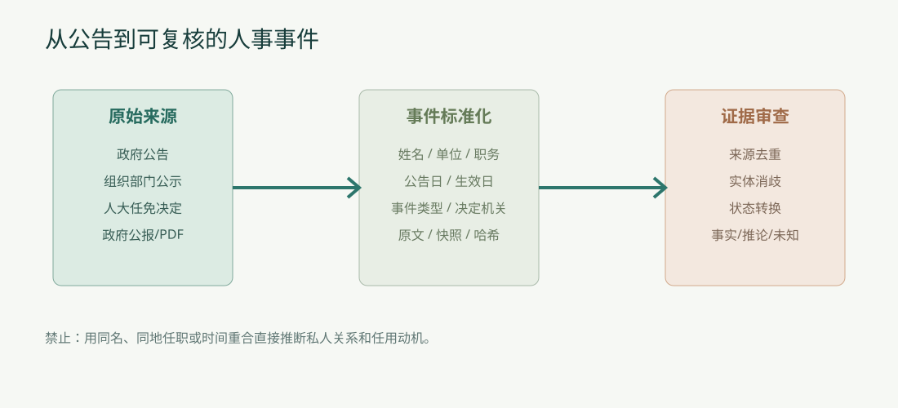

01｜研究问题：从履历观察到证据化分析
观察到一个干部从甲地调往乙地、从某部门转入地方、从副职升任正职，容易产生“为什么是他”“背后有什么关系”“这次调动是否异常”等问题。但公开履历只显示职业事件的一部分，不能自动揭示内部推荐、考察、组织讨论、决策理由和个人关系。
本文研究公开制度和公开人事记录，不推断未公开关系、私人动机或未经证实的政治联系。
02｜制度边界：干部任用与公务员管理不是同一个概念
2019 年修订的《党政领导干部选拔任用工作条例》适用于中央和县级以上地方党政机关、人大、政府、政协、纪委监委、法院、检察院等规定范围内的领导职务选拔任用，并对参照公务员法管理的群团机关和相关事业单位领导人员作出参照规定。[S1]
《中华人民共和国公务员法》规定公务员的条件、权利义务、职务与职级、录用、考核、任免、升降、交流回避、工资福利、辞职辞退和退休等制度。该法所称公务员，是依法履行公职、纳入国家行政编制并由国家财政负担工资福利的工作人员；法律对领导成员产生、任免、监督另有规定的，从其规定。[S2]
因此，不能把所有“干部”都简单等同于公务员，也不能把国有企业负责人、事业单位管理人员、党政领导干部和普通公务员的任用程序混成一套规则。
03｜正式制度流程：推荐不是选举，公示也不是最终任命

- 分析研判与动议：组织部门根据领导班子建设和岗位需要研究提出人选工作安排。
- 民主推荐：包括谈话调研推荐和会议推荐。推荐结果是重要参考，一般在一年内有效；条例要求防止把推荐票等同于选举票。
- 确定考察对象：综合推荐、日常了解、岗位匹配和班子结构等因素，不简单按票数排序。
- 组织考察：通过谈话、民主测评、走访、档案审核、个人事项核查、听取纪检监察机关意见等方式，考察德、能、勤、绩、廉。
- 集体讨论决定：按干部管理权限，由党委（党组）集体讨论作出任免决定，或提出推荐、提名意见。
- 任前公示和任职：提拔担任厅局级以下领导职务通常应在党委（党组）讨论决定后、任职通知前公示，公示期不少于五个工作日；特殊岗位和换届考察中已公示的人选有例外。
- 依法选举或任命：涉及人大、政府等法定职务的，还需要按相应法律、章程和规定完成选举、任命或决定任命。
以上程序来自 2019 年条例。[S1] 任前公示并不等于任命已经完成；提名也不等于当选；党委推荐与人大依法任命是不同环节。
04｜组织激励：推荐、考察和集体决策的制度逻辑
从组织治理角度，干部任用可以理解为多目标的人岗匹配问题。组织需要同时考虑政治与纪律要求、岗位专业性、工作绩效、领导班子结构、地区与部门经验、干部培养和岗位连续性。
- 信息不对称：上级组织部门难以完全观察干部在基层、部门和复杂任务中的实际能力，需要档案、考核、谈话、审计和纪检监察信息补充。
- 指标替代风险：如果单纯追求票数、短期 GDP、项目数量或单一考核指标，干部可能围绕可量化指标行动，而忽略长期公共服务和风险。
- 集体决策：集体讨论能够形成组织责任和程序约束，但公开记录通常不足以重建每位成员的具体意见。
- 岗位轮换：交流可能用于工作需要、干部锻炼、任职时间较长或回避要求，但不能仅凭一次跨地区调动判断真实动机。
正式制度规则不代表每次实际任用都能仅凭公开网页完整解释。制度设计、执行质量和具体人事结果必须分别研究。
05｜干部交流与“异常调动”：先识别规则，再讨论偏离
条例规定，交流对象包括因工作需要交流、需要通过交流锻炼提高领导能力、在一个地方或部门工作时间较长、按规定需要回避以及其他需要交流的干部；交流重点包括县级以上地方党委和政府领导成员等。[S1]
因此，跨地区、跨部门或跨层级调动本身并不构成异常。判断某项调动是否值得研究，应核对岗位层级、事件类型、岗位空缺、组织调整、任职时间、同类岗位基准、法定任命程序以及是否存在独立公开证据。
“异常”应当是与适用规则、同类基准或可验证事实相比存在明确偏离，而不是研究者觉得某条履历看起来不寻常。
06｜公开信息能看到什么，不能看到什么
| 公开资料通常能证明 | 不能单独证明 |
|---|---|
| 某人何时被公告拟任某职务 | 最终已经任命 |
| 某机关何时发布任免通知 | 内部讨论的完整理由 |
| 某人大常委会何时作出任命或免职决定 | 任免背后的全部动机 |
| 某人从哪个公开岗位转任哪个岗位 | 私人关系或利益关系 |
| 公开任职时间和公告来源 | 未公开的考察评价和组织协商 |
2019 年条例明确禁止私自泄露研判、动议、民主推荐、民主测评、考察、酝酿和讨论决定干部等有关情况。[S1] 公开资料因此存在制度性边界，不是“多爬几个网站”就能补齐的信息缺口。
07｜把人事公告转化为事件数据库
| 字段 | 含义 | 质量要求 |
|---|---|---|
| person_key | 内部人物实体键 | 不能用身份证号等敏感标识 |
| event_id | 人事事件唯一编号 | 同一事件多来源归并 |
| event_type | 拟任、公示、提名、当选、任命、免职、辞职、交流、挂职 | 不能把拟任等同任命 |
| position_before/after | 调整前后公开职务 | 保留原始称谓，不擅自推断级别 |
| organization_before/after | 前后单位和地区 | 记录组织层级与行政区划版本 |
| announcement_date | 公告发布日期 | 与事件生效日分开 |
| effective_date | 决定、当选或任命生效日 | 按法定程序取值 |
| authority | 发布或决定机关 | 区分党委、人大、政府、组织部门 |
| source_url/snapshot | 原始链接与网页/PDF快照 | 保留获取时间、哈希和版本 |
| evidence_status | 证据状态 | 支持、部分支持、争议、未核验 |
采集流程应包括权威来源发现、原始网页/PDF留存、字段提取、转载去重、同名实体消歧、事件状态转换和人工复核。official-crawler 负责发现与留存，事件库负责标准化，研究者负责解释和证据审查。
08｜事件类型必须严格区分
| 公告用语 | 可以确认 | 不能直接推出 |
|---|---|---|
| 拟任公示 | 进入任前公示程序 | 最终已经任命 |
| 提名 | 提出候选人 | 已经当选或正式任命 |
| 当选 | 按程序当选 | 任期内不会调整 |
| 任命/决定任命 | 有权机关作出正式任命 | 全部任用动机 |
| 免职 | 免去某项职务 | 一定是处分或失势 |
| 辞去职务 | 辞职或法定辞职程序 | 一定是被调查或被迫离职 |
| 挂职 | 临时担任职务 | 与正式调任相同 |
| 交流任职 | 按组织程序岗位交流 | 一定是晋升或降职 |
09｜职业轨迹分析：从履历构建可检验问题
职业轨迹可以描述为一系列有时间戳的职位转换。每条边都应当有一个公开人事事件作为证据。比较时可构建任职时长分布、同系统与跨系统调动比例、同地区与跨地区流动比例、正职/副职和部门/地方岗位转换，以及挂职与正式任命的区别。
两人曾在同一地区、同一部门或同一时间段工作，属于可验证的职业交集；由此推断“派系”“保护关系”或利益输送，需要完全不同的证据链。履历图只能展示公开职业事件的关联，不能证明私人关系。
10｜反证与替代解释：一条调动不能单独讲故事
- 机构改革或部门合并导致岗位变化；
- 法定任期、任职回避和交流制度；
- 人大、政协、政府任免程序与公告发布时间差异；
- 领导班子结构调整或专业岗位需求；
- 媒体选择偏差：更容易报道高层、跨地区或引人注意的调动；
- 公开数据缺失：临时分工、兼任和内部安排可能造成履历断点。
只有当某个解释能够被独立公开材料支持，并排除了更普通的制度解释，才可以把它提升为有证据的推论。
11｜结论
干部任用研究的价值，不在于从有限公开履历中猜测隐藏关系，而在于把制度规则、组织程序和公开人事事件分开，建立可复核的职业轨迹数据。
公开公告能够证明某些事件发生，却通常不能重建完整内部决策过程。研究应坚持三条边界：公告证明公告所写的事，不证明未公开的动机；职业交集证明工作经历交叉，不证明私人或利益关系；调动是否异常，必须先建立适用规则和同类基准，再寻找独立证据。
相关研究
- official-crawler：公告发现、留存和人事事件数据管线。
- 资源入口、依赖关系与权力转移：组织资源和岗位控制权。
来源定位：正文 [S1]—[S2] 指向制度原文。